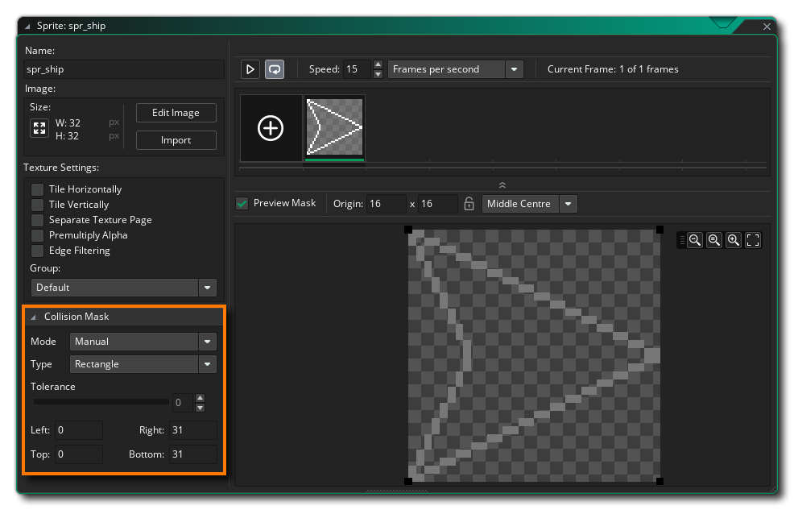
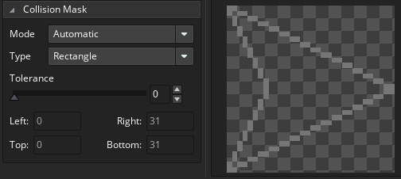

In this chapter, we're going to add in bullets and have collisions for them with the asteroids, as well as collisions for the asteroids with the player ship.
NOTE: If you close the accompanying video then you can get it back by clicking here
Since we haven't defined any bullet objects or sprites, let's first deal with the collision between the player ship object "obj_ship" and the asteroid objects "obj_asteroid". Now, collisions in GameMaker Studio 2 are based off of what is called the collision mask, which is defined in the Sprite Editor:

This "mask" is the area that will be used by GameMaker Studio 2 to detect collisions, so that two instances are considered "in collision" when their collision masks overlap, or a mouse click is detected when the mouse x/y position is inside the defined mask area. There are a number of different mask options to choose from, including the mode - whether the mask should be defined automatically or manually - and the type - the shape that should be used to generate the mask.
If you look through the type options, you'll see that there is a precise option. This makes the collision mask "pixel perfect", so that transparent areas will be ignored. You might think that this is the best option of all, as it means that all your collisions will be realistic, but it's not. Calculating collisions is costly at the best of times, and using a precise pixel-perfect check for everything would increase the cost of doing collisions greatly. This is why we generally use rectangular collision masks, as they are relatively fast to check and deal with.
That said, for our player object, we'll be using a Diamond collision mask. This is still a faster mask type than "precise", and has the benefit that is fits the "nose" of our ship sprite nicely. So, select the diamond type now, and set the mode not manual, then position the mask over the ship sprite, as shown below:

You'll notice that the "wings" of the player ship sprite aren't covered by the mask, which means that they will not detect collisions. In general, this is fine and pretty much normal for video games. Players don't want every little thing to kill them, and as long as the collision mask is consistent and they can discover what area is okay and what area isn't, then it's fine. What would be worse would be a rectangular collision mask, as some things would be considered in a collision when visually they aren't, and so the player would feel cheated.
With that done, let's open each of the asteroid sprites and set the collision mask for them. We don't need anything fancy here, so leave the mode on Automatic and set the type to ellipse:

When you've given each asteroid sprite an ellipse collision mask, we can move on and code the collisions themselves...
Click the "Next" button to continue...